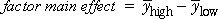

Experiments with many factors
In many research contexts, there is a large number of factors that could potentially affect the response. The first step in the investigation is therefore a screening experiment that is designed to identify the most important factors — those that have the greatest effect on the response.
Hardness of car paint
The aim of this experiment is to evaluate which of 15 compounds (A - O), added to a car paint will increase its hardness when sprayed onto a car panel.
Each of the 15 additives can be either absent or present at a fixed concentration in any sample of paint, with mixes possible, so there are 15 controlled factors for the experiment. The hardness of the paint (as measured by a scratch test) has to be as high as possible.
A screening experiment should identify a smaller number of additives whose affect on hardness would be studied in greater depth in a later experiment.
Ranking of factors
In most screening experiments, only two levels are used for each factor. The estimated effect for any factor is the difference between the mean response at these two levels,

The most important factors are these whose factor effects are furthest from zero.
Choice of factor levels
For each numerical factor, a decision is needed on the values that correspond to the 'high' and 'low' levels for the the factor. Preliminary trials may help in this choice of factor levels.
The first point is particularly important if the estimated factor effects are used to decide on 'important' factors. The decision about which factors should be included in further studies must therefore take into account how the 'low' and 'high' factor values were defined.